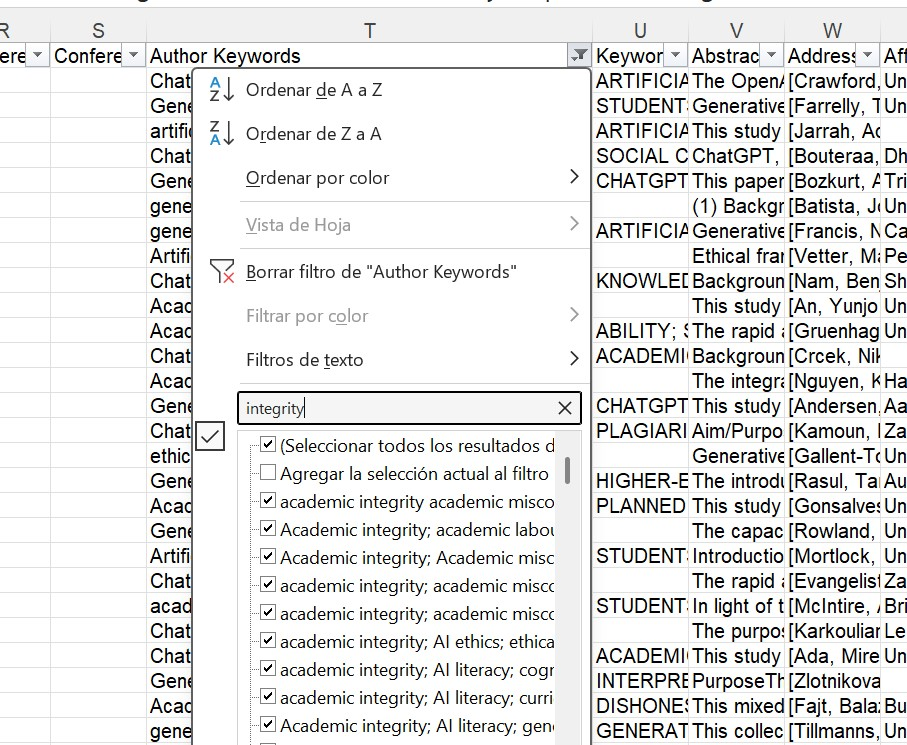

C NotebookLM para cribado de lecturas
NotebookLM es una herramienta de Google basada en modelos de lenguaje (actualmente Gemini) diseñada para trabajar con documentos propios. A diferencia de un chatbot genérico, NotebookLM solo responde basándose en las fuentes que tú le proporcionas — no accede a internet ni a su base de conocimiento general para responder preguntas sobre el contenido de tus documentos.
Esto lo convierte en una herramienta especialmente útil para revisiones bibliográficas: permite interrogar un corpus de textos de forma sistemática sin el riesgo de que el modelo “rellene” con información externa no verificada.
C.1 Acceso y licencia
NotebookLM es gratuito con una cuenta de Google. La Universidad de Granada ofrece acceso a Google Workspace for Education (Go UGR) con cuentas @go.ugr.es, lo que incluye acceso a NotebookLM con las garantías de privacidad del acuerdo institucional con Google. Se recomienda usar siempre la cuenta institucional para trabajar con documentos de investigación.
Acceso: notebooklm.google.com
Nota: NotebookLM Plus (versión de pago) ofrece límites más altos de fuentes y consultas. Para los usos habituales de una revisión bibliográfica, la versión gratuita es suficiente.
C.2 Paso a paso: crear un notebook y cargar fuentes
C.2.1 1. Crear un nuevo notebook
- Acceder a notebooklm.google.com con la cuenta
@go.ugr.es - Hacer clic en Nuevo notebook
C.2.2 2. Cargar fuentes
NotebookLM acepta varios tipos de fuentes:
- PDFs — la opción más habitual para artículos científicos
- Google Docs y Google Drive — útil para notas propias o documentos de trabajo
- URLs — páginas web y artículos online
- Texto pegado directamente
- Vídeos de YouTube (transcribe automáticamente)
En nuestro caso, podemos lanzar una búsqueda por términos de un cluster específico de nuestro mapa en el campo de palabras clave de nuestro fichero Excel y hacer un barrido manual sobre pertinencia y relevancia de los mismos.

Una vez identificados los textos, podemos localizar los PDFs correspondientes y cargarlos en NotebookLM agrupados por temática si el corpus es grande.
Límites actuales: hasta 50 fuentes por notebook y 500.000 palabras por fuente.
Importante: NotebookLM no es un repositorio de PDFs — trabaja sobre los documentos que tú le proporcionas. No tiene acceso a bases de datos bibliográficas ni puede buscar artículos por ti.
C.3 Prompts efectivos: cómo interrogar el corpus
La calidad de las respuestas de NotebookLM depende en gran medida de cómo se formulan las preguntas. Algunos principios básicos:
C.3.1 Prompts generales (sobre todo el corpus)
Útiles para obtener una primera visión de conjunto:
Resume los principales temas o líneas de investigación que aparecen
en las fuentes cargadas. Incluye los trabajos que abordan cada una de estas líneas y desde qué perspectiva lo hace cada unoCrea una tabla con las principales metodologías más frecuentes empleadas en estos estudios. Quiero que la tabla tenga tres columnas: Metodología, breve descripción, referencia de trabajos que la empleanHazme un breve resumen por cada una de las fuentes que tienes. Quiero que en ese resumen destaques no sólo el objetivo del estudio y cómo se abordó, sino que te centres en aspectos relacionados con X.C.3.2 Prompts dirigidos a documentos específicos
NotebookLM permite seleccionar fuentes concretas antes de hacer una pregunta. Esto es especialmente útil para comparar posiciones o profundizar en un artículo:
- En el panel de fuentes, seleccionar uno o varios documentos específicos
- Formular la pregunta — NotebookLM responderá solo con base en esas fuentes
Ejemplos:
[Seleccionando 2-3 artículos teóricos]
¿Cómo definen estos autores el concepto Y?
¿Hay diferencias entre sus definiciones?[Seleccionando un artículo metodológico]
¿Qué limitaciones reconocen los autores en su propio estudio?C.4 Outputs: informes, infografías y presentaciones
NotebookLM puede generar varios tipos de outputs a partir del corpus:
C.4.1 Notas generadas por IA
Desde el panel de notas, se pueden generar automáticamente: - Resumen del notebook — síntesis general de todas las fuentes - Guía de estudio — estructura jerarquizada de conceptos clave - Índice de contenidos — organización temática de las fuentes - Línea temporal — si las fuentes contienen referencias cronológicas
C.5 Generar notas y añadirlas como fuentes
Una de las funcionalidades más potentes de NotebookLM es el ciclo nota-fuente: las notas que generas (o que genera la IA) pueden añadirse como fuentes adicionales, lo que permite construir una síntesis progresiva.
Flujo de trabajo recomendado:
- Cargar el corpus inicial de PDFs
- Generar notas temáticas con prompts dirigidos
- Revisar y editar las notas (esto es fundamental — ver sección de limitaciones)
- Añadir las notas revisadas como fuentes adicionales
- Formular preguntas de síntesis que integren tanto los artículos originales como tus propias notas
Este proceso convierte NotebookLM en un cuaderno de trabajo acumulativo que va incorporando tu propia interpretación del corpus.
C.6 Limitaciones y buenas prácticas de NotebookLM
C.6.1 Lo que NotebookLM hace bien
- Identificar rápidamente temas recurrentes en un corpus amplio
- Localizar pasajes relevantes dentro de documentos largos
- Generar primeras síntesis que sirven como punto de partida
- Ayudar a priorizar qué documentos merecen lectura profunda
C.6.2 Lo que NotebookLM no hace bien
- No razona sobre lo que no está en el corpus. Si un artículo relevante no está cargado, NotebookLM no lo “sabe” — y no te avisará de su ausencia.
- Puede generar síntesis plausibles pero incorrectas. El modelo puede confundir autores, atribuir argumentos incorrectamente o simplificar matices importantes. Siempre verificar en el documento original.
- No sustituye la lectura profunda. NotebookLM puede decirte que un artículo habla de X, pero no puede reemplazar la comprensión crítica que se obtiene leyendo el artículo.
- Tiende a nivelas diferencias. En su síntesis, el modelo puede suavizar contradicciones o tensiones entre autores que son precisamente lo más interesante del corpus.
C.6.3 Verificación de la información
NotebookLM incluye citas con número de fuente en sus respuestas, lo que permite localizar el pasaje original. Ante cualquier afirmación que vaya a usarse en el texto de la revisión:
- Localizar la cita en el documento original
- Leer el contexto completo del pasaje (no solo la frase citada)
- Comprobar que la interpretación del modelo es coherente con la del autor
Importante: NotebookLM es una herramienta para organizar y priorizar lecturas, no para reemplazarlas. Su mayor valor está en ayudarte a identificar qué hay que leer en detalle y qué puede leerse de forma más tangencial. La síntesis final siempre es responsabilidad del investigador.
C.6.4 Buenas prácticas resumidas
- Usar siempre la cuenta institucional (
@go.ugr.es) para documentos de investigación - Cargar fuentes verificadas, no solo abstracts
- Formular preguntas específicas, no preguntas abiertas muy generales
- Revisar siempre las citas en el documento original antes de usar una afirmación
- Tratar los outputs como borradores de trabajo, nunca como texto final
- Documentar qué preguntas se lanzaron y qué respuestas se obtuvieron (trazabilidad del proceso)
La divergencia es información. Si VOSviewer y NotebookLM sugieren agrupaciones diferentes, no significa que una esté “equivocada”. Cada herramienta captura una dimensión distinta del corpus: VOSviewer las co-ocurrencias estadísticas de términos, NotebookLM la interpretación semántica del contenido. Las diferencias merecen atención y análisis.